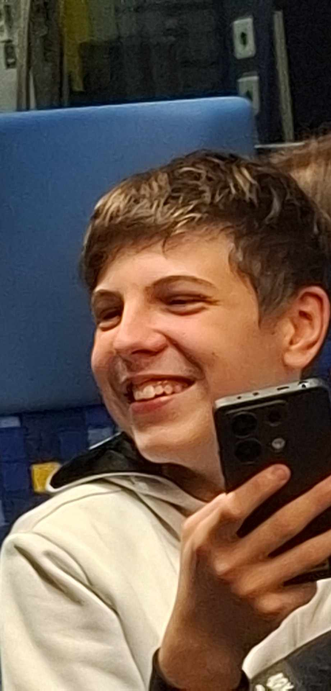
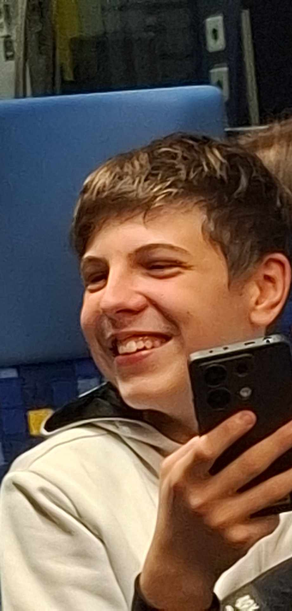

|
Személyes adatokNév: Búzás BenceNem: Férfi Születési hely: Lőrinci városház Születési idő: 2026 Állampolgárság: Roma Kedvenc zenéje: |
Története:Búzás Bence – vagy ahogy a lőrinci legendák nevezik: „A Fiú, Aki 2026-ban Született, Mégis Már Most Nyeri a Pókerasztalokat” – olyan különleges figura, hogy a fizikusok háromszor is újra kellett, hogy gondolják az idő fogalmát. A rejtélyes születés: Lőrinci városházán A történet szerint Bence azért született a városházán, mert a kórházban nem volt hely, a városházán meg éppen ülésszünet volt. Az anyakönyvvezető állítólag egyszerre sírt és nevetett, mikor kitöltötte a lapot. És hogy miért szerepel a születési évnél 2026? Mert Bence állítólag idő előtt érkezett. Nagyon idő előtt. A család szerint még a jövőben is várják. A pókerasztal gyermeke A képen látható, ahogy Bence magabiztosan ül a zsetonok között. Ez nem véletlen. A legenda szerint már a bölcsőjébe is tettek pár pókerzsetont, hogy „nyugodtan csörögjön”. Mire óvodás lett, már tudott: blöffölni, mosolyogni, miközben semmi oka rá, és úgy húzni lapot, mintha mindig ő írta volna a szabálykönyvet. A mosoly, ami mindent elárul Bence mosolya két dolgot jelenthet: Nyert. Nagyon nyert. A tanárok szerint akkor is mosolyog, amikor rossz jegyet kap. Sőt, akkor a legjobban. A lőrinci jövő reménysége Bence jövőjéről mindenki más jóslattal áll elő: A barátai szerint profi pókeres lesz. A szomszéd szerint polgármester. A matektanár szerint statisztikus, mert „valahogy mindig kijön neki, ami másnak nem”. A több kép, több karakter A mellékelt fotók alapján Bence legalább három alteregóval rendelkezik: „A hidegben is mosolygó sapkás srác”, „A mindig röhögő Bence”, „A kajától boldog Bence” és persze a klasszikus: „A pókerasztal ura”. Kedvenc zenéje A dokumentum szerint nincs megadva, ami azt jelenti: Mindig azt hallgatja, amihez épp nyeréshez van kedve. |
Kapcsolódó körözésekTanár bosszantása – Btk. 420.§Órai rendbontás – Btk. 666.§ |